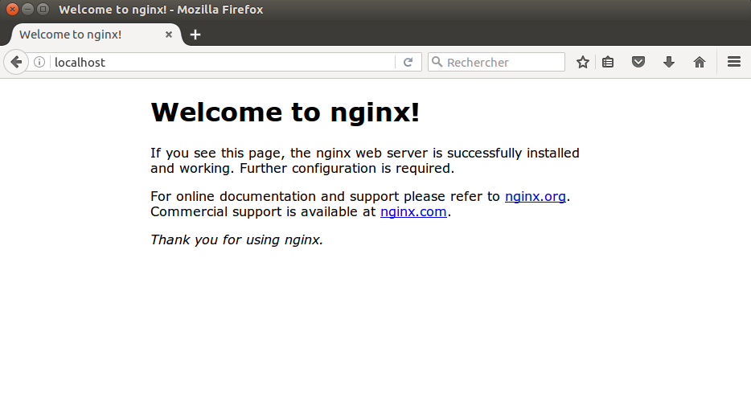
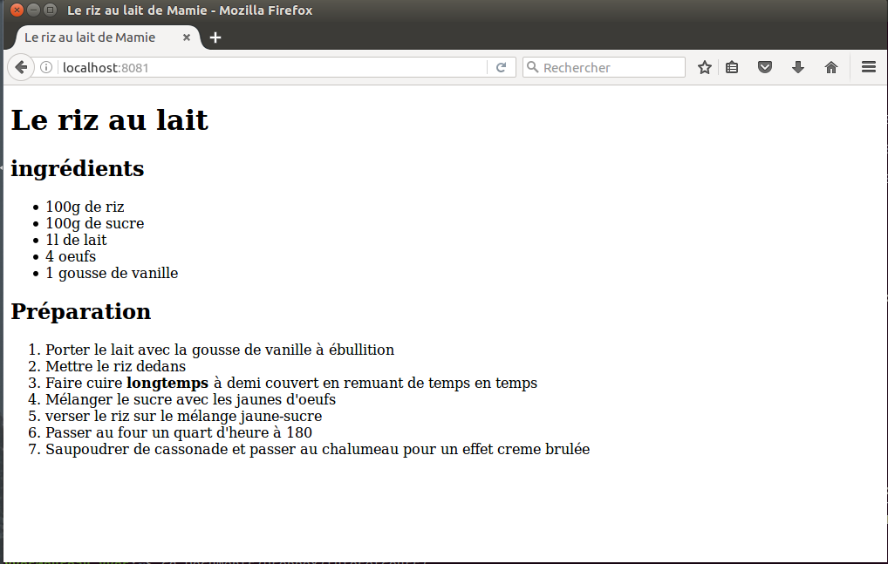

Docker key concept is to organize softwares runnings on computers as independant units called containers. On a single machine (your pc or a server), you can have multiple containers which effectively behave individually as if they were independant servers or machines. Containers are started by running them . When you first start a container, you need to specify which docker image it is derived from. A docker image is effectively a template. You can see it as an independant machine on which software has been installed. Starting a docker container from this image would be equivalent to do a copy/paste from this machine and using it without messing up the machine you have copied and without the need of reinstalling the softwares already installed on the first machine. And that's nice because installing new software can be long and tedious.
A second good thing is that you can take advantage of a lot of docker images that already exists and that are all stored on the Docker hub web site . Most of the open source software editors will actually store a docker image with all what is required for their software to run. And that effectively save you the time to install the software on your machine.
That is the case for nginx. We will first download the nginx image from the docker hub by typing in our terminal :
yves@bureau-yves:~$ docker pull nginx
You can now start an nginx server on your machine by simply running :
yves@bureau-yves:~$ docker run -d -p 80:80 nginx
a861b5fdf6f2bd66564a9951c1b7b961d1b426cc9476fa0fa6e3cd5d1007fc66
yves@bureau-yves:~$
A few explanation about this command line :
using the docker ps command that lists all running containers, you can verify it started correctly.
yves@bureau-yves:~$ docker ps
CONTAINER ID IMAGE COMMAND CREATED STATUS PORTS NAMES
a861b5fdf6f2 nginx "nginx -g 'daemon off" 12 minutes ago Up 12 minutes 0.0.0.0:80->80/tcp, 443/tcp sleepy_blackwell
yves@bureau-yves:~$
You can now open your favorite browser and type http://localhost:8080 in the url line, this should look like :
The above page displays the default nginx welcome page. We will now change things to display our own content. Before doing that, we should remove this container to start from a fresh new installation. You can remove a container by using the docker rm command with its name. Here the name has been assigned automatically and is the last info that was showing up when you did the docker ps. sleepy_blackwell was the one docker assigned to the container on my machine. It is good practice to first stop the container and then removes it. I also use the -v option with the remove command that helps saves space that docker takes on your computer. I will not do it in this tutorial but encourage you to look more in depth in docker's documentation to learn more about all the wonderfull things you can do with containers. Here is what I do to stop the container and remove it. Post doing it a docker ps command checks the container is not here anymore.
yves@bureau-yves:~$ docker stop sleepy_blackwell
sleepy_blackwell
yves@bureau-yves:~$ docker rm -v sleepy_blackwell
sleepy_blackwell
yves@bureau-yves:~$ docker ps
CONTAINER ID IMAGE COMMAND CREATED STATUS PORTS NAMES
yves@bureau-yves:~$
When you start a container, docker will give it a randomly chosen name built from an adjective and the name of a famous scientist. This is both usefull and funny as it is easier to use a name for container that their alphanumerical ids. We will be using several containers that we will need to be able to refer to. To avoid messing up between lazy_einsteins and peaceful_permans, it is a good practice to name your docker container by using the --name youChooseAName option in the docker run command line. We will do it subsequantly.
Nginx is a full web sever which can serve static html site. We will illustrate this by starting the web site which is in the recipe-site directory. So make sure that your terminal is currently located at the root of this tutorial directory, ie the docker-nginx-tuto directory that was created when you did a git clone and type the following command :
$ docker run -d --name recipe-site -v $(pwd)/recipe-site:/usr/share/nginx/html:ro -p 8081:80 nginx
You should be familiar with the -d, --name and -p options. The -v option is a volume mounting command from docker. It will actually use the host directory which path is left from the first semicolon to mount it in the new container at the location which is specified on the right part of the semicolon. The final :ro part specifies that this location should be read-only inside the container (but you still can modify it from your computer). On the right hand side of the semicolon /usr/share/nginx/html is the place where nginx software will look for html files to be served. So when you go now in your browser and go to url http://localhost:8081, you will now see the html files that are under the recipe-site directories :
If you read french, you can now enjoy this delicious desert from Normandy that came to me from my grand-mother through my mother...
Remember Docker containers are isolated from each others. So we will now launch on our PC a second web site. In your terminal, type
docker run -d --name zola-site -v $(pwd)/zola-site:/usr/share/nginx/html:ro -p 8082:80 nginx
if you go to your browser and type http://localhost:8082, you notice that you'll get a 403 error which is because Nginx did not find any index.html file because the index site for this Zola intro site is actually zola.html. If you go to the right url : http://localhost:8082/zola.html, you will see the second site.
In a terminal, type
$ docker logs -f recipe-site
Nothing happens, that's normal, then in your browser go to http://localhost:8081/noway. Your browser will display a 404 and your terminal will display something like that :
2016/12/18 06:44:30 [error] 7#7: *1 open() "/usr/share/nginx/html/noway" failed (2: No such file or directory), client: 172.17.0.1, server: localhost, request: "GET /noway HTTP/1.1", host: "localhost:8081" 172.17.0.1 - - [18/Dec/2016:06:44:30 +0000] "GET /noway HTTP/1.1" 404 169 "-" "Mozilla/5.0 (X11; Ubuntu; Linux x86_64; rv:50.0) Gecko/20100101 Firefox/50.0" "-"
You can see you have valuable information about why the 404 happened, what http request triggered it and some more information about this request headers. The docker logs command gives you access to the output of a container. The -f option is a way to tell you want to get it continuously. We will use it in the following steps. For the moment, just to a Ctrl-c in the terminal to stop the docker logs display and come back to your command line.
Remember when we started the site about zola, we had to type specifically the zola.html file name in the url line. In this section, we will use nginx configuration to fix this.
If the nginx container with the zola site is not running anymore, relaunch it with
docker run -d --name zola-site -v $(pwd)/zola-site:/usr/share/nginx/html:ro -p 8082:80 nginx
And then do a
docker exec -ti zola-site bash
This gives you access inside the container running the nginx server with the zola site. It basically tells docker you want to run the shell bash command inside the container named zola-site. The -ti option is the way to specify you want it to be interactive, i.e be able to type commands and display their results. The command invites now looks something like root@ffb76300f5a1:/#. You are root user inside your container.
Go and look for the default files.... where they are /etc/nginx/conf.d etc.
Config for zola : changer l'index, regarder ou on place le fichier
relancer avec sa config
$ docker run -d --name zola-site -v $(pwd)/config-dir/zola-conf:/etc/nginx/conf.d:ro -v $(pwd)/zola-site:/usr/share/nginx/html:ro -p 8082:80 nginx:official
On fait une config tuto site et on fait le premier rewrite /$ . On lance avec cette config ca marche
On rajoute le error log en debug sur ce serveur, on fait le docker exec nginx -s reload puis docker logs -f --tail="0" et on constate qu'on a les infos sur le rewrite
On essaye page2.html ca marche pas, on fait le rewrite de html avec les regex et on voit que ca marche.